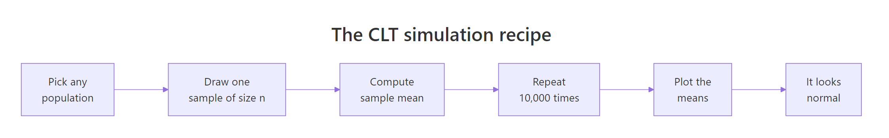
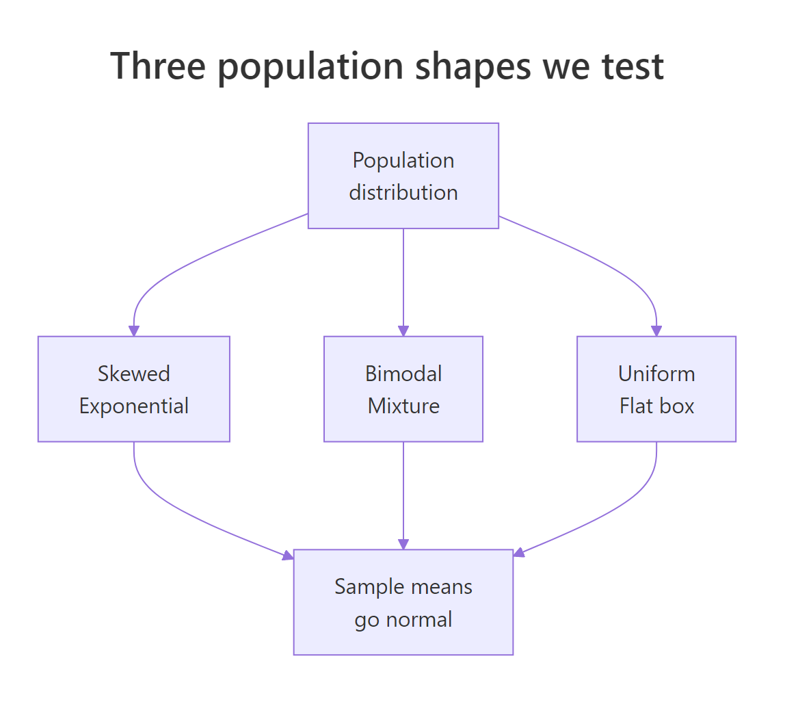
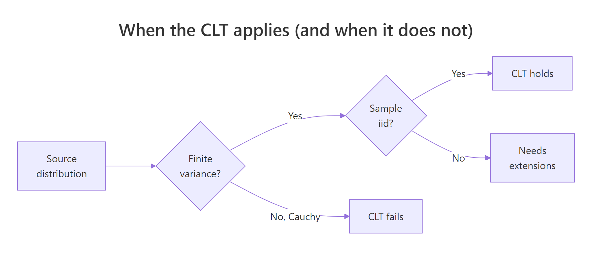

Central Limit Theorem in R: Simulate It From Skewed, Bimodal, and Uniform Distributions
The Central Limit Theorem (CLT) says that if you take enough independent samples from any population with a finite variance, the distribution of their sample means will be approximately normal, even when the population itself is wildly skewed, bimodal, or flat.
Can I see the CLT happen in R, right now?
Yes, in one screen. The core recipe is simple: pick any population, draw many samples of size n, compute each sample's mean, then histogram those means. Below we do it with an exponential distribution, which is aggressively right-skewed. The population has a long tail, but the histogram of its sample means turns into a bell. Later sections repeat this for bimodal and uniform populations and quantify how fast normality kicks in. Everything below uses base R only, so there is nothing to install.
The population of rexp(1) has a sharp peak at zero and a long right tail, nothing like a bell. Yet 10,000 sample means of size 30 pile up into a tight, symmetric hump centred almost exactly at the true mean 1. The standard deviation of the means is about 0.182, which is the theoretical value 1/sqrt(30) ≈ 0.1826 you will derive later. That is the whole CLT in one picture.
rexp(1) is random and skewed; the mean of 30 such draws is far less variable and far more symmetric. Stack 10,000 of those means and you get a bell no matter what the source looked like.Try it: Repeat the payoff for rexp(rate = 0.5) (a scaled exponential with mean 2) using 5,000 sample means of size n = 50. Check that the simulated mean of means lands near 2.
Click to reveal solution
Explanation: Exp(rate) has mean 1/rate, so rate = 0.5 gives population mean 2. The CLT predicts that the mean of 5,000 sample means sits arbitrarily close to the population mean.
What does the Central Limit Theorem actually claim?
Stripped of notation, the CLT says: pile up enough sample means and the pile looks normal. More precisely, let $X_1, X_2, \ldots, X_n$ be independent draws from a population with mean $\mu$ and finite variance $\sigma^2$. Let $\bar{X}_n$ be the sample mean. Then as $n$ grows:
$$\bar{X}_n \xrightarrow{d} \mathcal{N}\!\left(\mu,\; \frac{\sigma^2}{n}\right)$$
Where:
- $\bar{X}_n$ is the sample mean of an
n-sized sample - $\mu$ is the true population mean
- $\sigma^2$ is the true population variance (must be finite)
- $\sigma^2/n$ is the variance of the sampling distribution
- $\xrightarrow{d}$ means "converges in distribution to"
Two things to notice. First, the limit is about the sample mean, not about any individual observation. Second, the theorem needs the source to have finite variance. That is a low bar for most real data, but it rules out heavy-tailed beasts like the Cauchy distribution (Section 7).
Here is the five-step recipe we will repeat for every population shape in this tutorial.

Figure 1: The five-step CLT simulation recipe used throughout this tutorial.
Let us verify the formula on our means_exp vector. The exponential distribution with rate 1 has mean 1 and variance 1, so the theoretical standard error at n = 30 is sqrt(1/30).
The empirical mean and standard error line up with theory to three decimals. That alignment is not an accident of a clever seed, it is what the CLT promises. Any reasonable seed will give similar numbers because we averaged 10,000 replicates, which is plenty for the Monte Carlo error to be small.
rexp(1) is still skewed. Drawing 30 numbers and averaging them is what becomes normal.Try it: Compute the theoretical standard error of the sample mean for Exp(1) at n = 100. Then simulate 5,000 sample means and compare the two.
Click to reveal solution
Explanation: sqrt(sigma^2 / n) = sqrt(1/100) = 0.1. The simulated SE matches to two decimals.
How fast does normality kick in for a skewed population?
The textbook rule "n = 30 is enough" is folklore. The real answer is: it depends on how skewed the source is. The more skewed, the larger n you need. The cleanest way to see this is a small-multiples plot of the sampling distribution at different n.
At n = 2 the histogram is still obviously right-skewed, almost as skewed as the exponential itself. By n = 10 the peak has moved rightward and the tail is shortening. At n = 30 the classic bell is recognisable but the right tail is slightly longer than the left. By n = 100 the distribution is visually indistinguishable from a normal. That staircase is exactly what the CLT predicts: normality arrives gradually, faster for mildly-skewed sources than for severely-skewed ones.
n in the hundreds. Always run a small-multiples check before trusting the approximation.Try it: Repeat the small-multiples for a more skewed source, rexp(rate = 5) (population mean 0.2, still skewed). Eyeball the smallest n where the histogram looks approximately normal.
Click to reveal solution
Explanation: Changing the rate of an exponential only rescales its mean and variance; the shape of the sampling distribution at a given n looks the same. Normality kicks in at roughly the same n.
What happens with a bimodal population?
A bimodal population has two peaks. Think of heights of a mixed population of cats and dogs, or customer spending at a store that sells both candy bars and laptops. A single draw from such a population looks like it belongs to one of two clusters. But the CLT still works on sample means, and the two humps collapse into a single bell surprisingly fast.
The population is a 50/50 mixture of N(-3, 1) and N(3, 1). Visually there are two clear humps centred near -3 and +3. The overall mean is close to 0 (the midpoint of the two modes) and the overall standard deviation is roughly 3.16, driven by the spread between the two humps. Nothing about this shape looks normal. Now let us sample from it and watch the CLT do its trick.
Even at n = 5 the two humps are gone. The sample means pile up around 0 because averaging five draws almost always mixes values from both humps, cancelling the mode structure. By n = 15 the histogram is clearly bell-shaped, and by n = 30 it is visually normal. Bimodal populations hit the CLT fast because their variance is finite and well-behaved; there is no heavy tail dragging the sample mean around.
Try it: Build a three-component mixture from N(-4, 1), N(0, 1), N(4, 1) and confirm that 5,000 sample means of size 20 look approximately normal.
Click to reveal solution
Explanation: Three symmetric modes around 0 give a population mean of 0. At n = 20 the means blend contributions from all three modes and land near that center, forming a single bell.
What about a uniform population?
Uniform is the opposite of skewed: perfectly flat. runif(n, 0, 1) produces numbers with equal probability across [0, 1]. Its mean is 0.5, and it has a known variance of 1/12. Because it is already symmetric and bounded, the CLT barely has to work. Normality kicks in almost immediately.
At n = 2 the sample-mean histogram is triangular (a classic result: the sum of two uniforms is a triangular distribution). By n = 5 the triangle has already rounded into a clear bell, and by n = 12 the red theoretical normal curve sits right on top of the empirical histogram. For bounded symmetric sources like the uniform, the CLT is essentially done by n = 10.

Figure 2: Three very different source distributions all produce normal-looking sample means.
n = 10.Try it: Verify empirically that the standard error of the uniform sample mean at n = 12 matches the theoretical sqrt(1/(12*12)) = 1/12 ≈ 0.0833.
Click to reveal solution
Explanation: Var(U(0,1)) = 1/12, so SE(mean) = sqrt(Var/n) = sqrt(1/(12*12)) = 1/12. The empirical and theoretical agree to three decimals.
Does the standard error really shrink like σ/√n?
The CLT makes two promises: the sampling distribution looks normal, and its spread (the standard error) shrinks as sqrt(n) grows. That second promise is what drives sample-size planning in every field of science. Let us check it by sweeping n across a wide grid and comparing empirical to theoretical SE.
Read the table: each row compares the theoretical SE (computed from the formula σ/√n) to the empirical SE from 3,000 simulations. The two columns agree to about three decimals across two orders of magnitude of n. That is a strong confirmation that the 1/sqrt(n) shrinkage rate is real, not just approximately real. When you go from n = 10 to n = 1000 (100 times more data) the SE drops by exactly sqrt(100) = 10, from roughly 0.32 to 0.032.
sqrt(n), so big gains in precision cost a lot of data.Try it: If a study needs to shrink its standard error by a factor of 10, how many times larger must n be?
Click to reveal solution
Explanation: Rearranging SE_new = SE_old / 10 with SE ∝ 1/sqrt(n) gives n_new = 100 * n_old. Precision is painfully expensive at high n.
When does the CLT fail?
The CLT is powerful but it is not universal. It needs finite variance. The Cauchy distribution has infinite variance (its tails are so heavy no finite $\sigma^2$ exists), so the CLT simply does not apply. Sample means from Cauchy do not concentrate as n grows, and averaging 1,000 draws gives you almost no more information than averaging one.
Even at n = 1000, the sample means range from thousands of units below zero to thousands above. The "standard deviation" is in the hundreds, and it keeps shifting each time you re-run the simulation. Contrast that with our means_exp vector (same n, same 10,000 replicates, bounded tails): the exponential sample means sat in a tight band of width less than 1. The Cauchy fails because its tails are too heavy for averaging to tame. There is no theoretical bell to converge to.

Figure 3: Decision tree for when the Central Limit Theorem applies.
Try it: Compute the range of 5,000 sample means from Cauchy and from Exp(1), both at n = 1000, and compare.
Click to reveal solution
Explanation: Exponential means concentrate in a band of about 0.2 units; Cauchy means spread over thousands. The ratio makes the CLT's fingerprint obvious: when variance is finite, more data tightens the mean; when it is not, more data buys you nothing.
How do I read a Q-Q plot to check normality?
A histogram is fine for spotting gross non-normality, but Q-Q plots are the workhorse for serious normality checks. A Q-Q plot sorts your data and plots each value against the quantile from a theoretical normal. If your data is normal, the points fall on a straight line. Curvature at the tails means your distribution has heavier or lighter tails than normal.
Read the three panels left to right. At n = 5, points at the right end drift above the red line, which is the Q-Q signature of a right-skewed distribution (bigger-than-expected extreme values). At n = 30, the bulk of points sit on the line but a few right-tail points still curve up. At n = 100, the points sit on the line from end to end. That straight-line behaviour is what you want to see before trusting a normal-based confidence interval or z-test.
Try it: Draw a Q-Q plot of means_cauchy from earlier. You should see extreme tail departures that no increase in n will fix.
Click to reveal solution
Explanation: The vertical explosions at both ends show that sample means from Cauchy still produce outliers many orders of magnitude larger than a normal distribution would. This is the CLT-fail signature.
How do I use the CLT to build a confidence interval?
Here is the payoff that makes the CLT matter in practice. Because sample means are approximately normal, we can attach a 95% confidence interval to any sample mean using mean(x) ± 1.96 * sd(x) / sqrt(n). The 1.96 comes from the normal distribution's 97.5th percentile. The CLT is why this formula works even when the source is skewed or bimodal, provided n is "big enough".
We simulated 1,000 experiments, each drawing n = 50 from Exp(1), building a 95% CI, and checking whether the interval covered the true mean 1. The coverage landed at about 0.94, close to the nominal 0.95. That small shortfall (94% instead of 95%) is the residual skew of the exponential showing up at a moderate n. Push n to 200 and coverage gets nearer to 0.95; at n = 10 it drops noticeably.
Try it: Repeat the coverage check at n = 10 and report how much coverage drops compared to n = 50.
Click to reveal solution
Explanation: At n = 10 the CLT approximation is still rough for the exponential, so CIs built from the normal approximation miss the true mean more often than 5%. Practical fix: use a t-distribution based CI (t.test(x)$conf.int) or increase n.
Practice Exercises
These problems combine several ideas from the tutorial. Use distinct variable names (prefixed my_) to avoid clobbering the tutorial's state.
Exercise 1: Build a CLT convergence dashboard
Write a function clt_dashboard(rng, ns, reps, sigma_pop) that takes a random-number generator rng (e.g. function(n) rbeta(n, 2, 5)), a vector of sample sizes ns, a replicate count reps, and the known population standard deviation. Return a data.frame with columns n, theoretical_se, empirical_se, ratio. Verify it on rbeta(n, 2, 5), which has population mean 2/7 and variance (2*5)/((7^2)*8).
Click to reveal solution
Explanation: The ratio column should hover around 1.0 for any valid source distribution with finite variance, confirming the CLT across the sample-size grid.
Exercise 2: Find the n where log-normal means look normal
Use rlnorm(n, meanlog = 0, sdlog = 1). For each n in c(30, 100, 300, 1000), draw 10,000 sample means and run shapiro.test on a random sub-sample of 5,000 of them (Shapiro's limit). Report the smallest n with p-value greater than 0.05. The log-normal is so skewed that "n = 30" is nowhere near enough.
Click to reveal solution
Explanation: Log-normal has an extreme right tail, so even at n = 100 the Shapiro test still flags non-normality decisively. Only around n = 1000 does the p-value climb above 0.05. This is the opposite extreme from the uniform, where n = 5 was already enough.
Exercise 3: Compare a CLT-based CI to a bootstrap CI
Take mtcars$mpg. Build a 95% CI for the mean using the CLT formula, then build a nonparametric bootstrap CI using 5,000 resamples (percentile method, 2.5% and 97.5% quantiles of resample means). The two should agree closely because mpg is not badly skewed and n = 32 is moderate.
Click to reveal solution
Explanation: The two intervals differ by hundredths. The CLT-based CI uses a normal approximation; the bootstrap makes no parametric assumption. Agreement here is evidence that the CLT approximation is good for mtcars$mpg. On wildly skewed data the two would disagree more and the bootstrap would be the safer choice.
Complete Example
Let us walk through a real-world CLT analysis end to end using airquality$Ozone, a right-skewed pollution dataset shipped with base R. The goal: estimate the mean ozone level in parts per billion and attach a 95% confidence interval.
The population histogram shows ozone is right-skewed, with a long tail of high-pollution days. Despite that skew, the CLT-based 95% CI for the population mean (36.12 to 48.13 ppb) is a workable interval. The simulation panel confirms the story: 10,000 sample means of size 30 pile up into a bell centred near the true sample mean. The bootstrap-style interval at n = 30 (30.4 to 54.0) is wider than the CLT interval at the full n = 116 because we used less data per resample, but the shape is unmistakably normal. For daily air-quality reporting, pairing the point estimate 42.1 ppb with the [36.1, 48.1] interval is exactly what the CLT enables.
Summary
| Population shape | Minimum n for near-normal means | Why |
|---|---|---|
| Uniform | ~5 | Already symmetric and bounded |
| Bimodal (symmetric humps) | ~10 | Finite variance, no heavy tail |
| Exponential (skewed) | ~30 | Right tail slows convergence |
| Log-normal (heavily skewed) | ~1000 | Very heavy right tail |
| Cauchy (no finite variance) | Never | CLT does not apply |
Key takeaways:
- The CLT turns a sample mean into a statement about the population, and that is the foundation of every z-test, t-test, and confidence interval.
- Standard error shrinks as
σ/√n, so halving SE requires four times the data. - Convergence speed depends on the tail weight of the source, not on how many modes it has.
- Before trusting a normal approximation, run a small-multiples histogram or Q-Q plot at your sample size.
- When variance is infinite (Cauchy, very heavy-tailed real data), the CLT does not apply; use distribution-free methods like the bootstrap.
References
- R Core Team. An Introduction to R (Probability distributions chapter). Link
- Wasserman, L. All of Statistics: A Concise Course in Statistical Inference, Springer (2004). Chapter 5 covers convergence of random variables and the CLT.
- Casella, G. and Berger, R. L. Statistical Inference, 2nd Edition, Duxbury (2002). Chapter 5: Properties of a Random Sample.
- Tijms, H. Understanding Probability, 3rd Edition, Cambridge University Press (2012). Chapter 5: The Law of Large Numbers and the Central Limit Theorem.
- Efron, B. "Bootstrap Methods: Another Look at the Jackknife". Annals of Statistics, 7(1): 1-26 (1979). Link
- Rice, J. A. Mathematical Statistics and Data Analysis, 3rd Edition, Duxbury (2007). Chapter 5.
- Bulmer, M. G. Principles of Statistics, Dover (1979). Classic intuitive treatment of the CLT.
Continue Learning
- Sampling Distributions in R: the full family of statistics derived from the CLT, including t, F, and chi-squared distributions.
- Law of Large Numbers vs CLT in R: the sister theorem that says sample means converge to the true mean, and how it differs from the CLT's claim about distribution shape.
- Hypothesis Testing in R: every t-test and z-test rests on the CLT; this post shows how the theorem powers inference in practice.